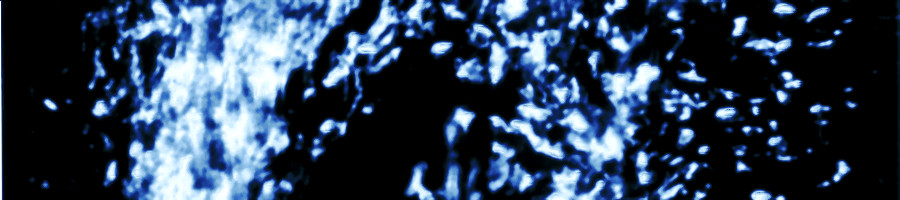

低温班
温度について…
こんにちは。春になり、少しずつ暖かくなってきましたね。今日(執筆当時)の東京の最高気温は15度のようです。冬の寒い日には、氷点下(=0度より下)になることもありますね。また、北海道では最低気温が−20度なんていう日もあります。地球上で最も寒い気温を記録したのは、南極の東南極高原で、-93.2度だそうです。
しかし、僕たちが実験を行う環境はそれよりもはるかに低い温度です。「絶対温度」を使って表すと、東京の最高気温は288K、地球上の最低気温は180K、などとなりますが、普段我々の実験は、およそ4.2Kから1.5K程度という非常に低い温度で行われています。
突然の状態の変化:相転移
温度が変わると、ものの性質が変わります。水は沸騰したり、凍ったりしますね。水の「転移点」(性質が大きく変わる温度)は、273Kと373K(0度と100度)にあります。ヘリウムの「転移点」は4.2Kと2.17Kにありますが、このうち2.17Kの方は普段見慣れない、風変わりな変化をします。
低温では熱運動が穏やかになるため、量子力学の効果が強く現れるようになります。2.17Kよりも低い温度のヘリウムは、強い量子力学的効果のために、粘性を失います。このように、多くの物質は「温度が高い時に現れる性質」と「温度が低い時に現れる性質」が異なっていて、それらがせめぎ合う点が相転移の点です。そのせめぎ合いを理解するのは非常に難しいですが、統計力学や量子力学によって、ある程度理解されています。
展示について
我々は、極低温の環境において性質の変化を示すものとして、ヘリウムを用います。特に、2.17Kでの性質の変化(相転移)に注目し、それよりも低い温度のヘリウムが持つ特殊な性質がよくわかる実験を行いました。その実験の様子は動画に撮影されており、当日は我々の説明とともにご覧いただけます。
低温実験は、常温の実験室に低温の部分を用意するので、その低温をキープするのが大変です。温度が均一になるように熱が移動してしまうのを防ぐ様々な工夫があり、実験の工夫にも物理を感じることができます。こちらもぜひ紹介させていただきたいと思っております。
また、現在進行中の実験があり、うまくいけば当日実演する予定でおります。これが見られるかどうかは実験の進み次第なのでどうなるか分かりませんが、我々も工夫を凝らして努力しております(超流動ヘリウムの動画は必ず見られます!)。皆様のご来場をお待ちしております。